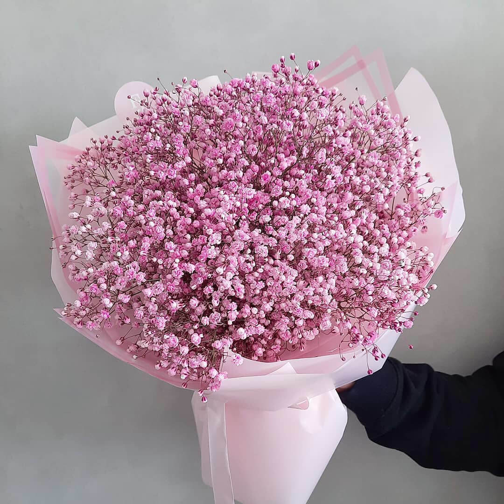

Гипсофилы
Гипсофилы
Название Гипсофила переводится достаточно прозаично – «любящая известь». Это связано с тем, что многие подвиды данного растения предпочитают известковые почвы. Благодаря своей неприхотливости Гипсофила произрастает почти на всех континентах. Срезанный качим может долго сохранять форму и свежесть в вазе, примерно до месяца.
Букеты